Simulate with complex geometries and complex physics
RegularizeDPA
regularize the computation of dynamic pressure in order to reduce fluctuations
The ClassicalDPA as well as the AlternativeDPA lead to tremendous pressure fluctuations over time, that can
be observed especially for simulations in long channels, where only at one end there is a Dirichlet-condition,
whereas as all the other walls are modelled by Neumann-type conditions.
The problem here, most probably, comes from the fact, that the pressure Poisson equation stems from the
equation of momentum where we have a formulation on the gradient of pressure (overdetermined system,
containing 3*N equations for the N unknown pressure values). By application of the divergence operator,
see DerivePoissonEquationForPressure , we obtain N equations for N unknown pressure values, but we most
probably loose information. This information loss might be the reason for the pressure fluctuations.
In general, the numerical discretization of the Pressure Poisson equation is given by
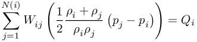
Such type of equation also arises, if we do not apply the divergence operator to the equation of momentum, instead we apply an arbitrary,
locally choosen vector 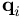 to the equation of momentum, i.e.
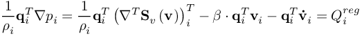
Discretize this equation in the FPM sense, i.e.
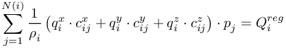
In fact, both equations aim to give an answer to the pressure. So, we could just add the enhancement,
such that the final, regularized linear system of equations is
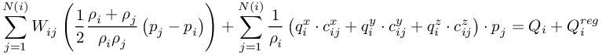
This regularization provides additional information on the slope / gradient of the pressure, whereas the
original Poisson equation provides only information about the curvature of the pressure.
The length of determines the weight of the regularization.
The observation so far is, that best result are obtained by 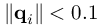
Useful choices of the direction of could be the velocity, the direction of the pressure gradient itself, or the directions perpendicular to
the pressure gradient. We have implemented a collection in the sense
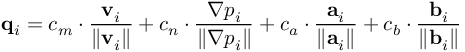
where the last two vectors 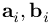 are perpendicular to the pressure gradient 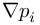.
The choice of can be controlled by the user:
- 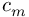 -> adjust FLIQUID_ConsistentPressure_CoeffMM
- 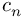 -> adjust FLIQUID_ConsistentPressure_CoeffNN
- 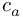 -> adjust FLIQUID_ConsistentPressure_CoeffTT (in fact, from a and b, MESHFREE computes a random vector perpendicular to the gradient of pressure)
- 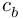 -> adjust FLIQUID_ConsistentPressure_CoeffTT